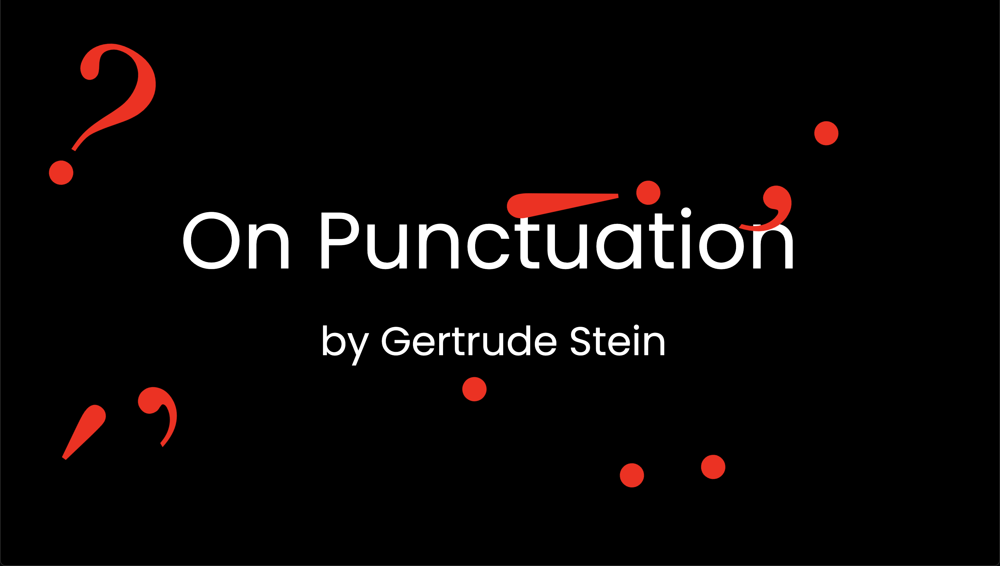

On Punctuation
An interactive platform that transforms Gertrude Stein's 'On Punctuation' essay into an engaging experience. As users read the essay, they're prompted to share their emotions and thoughts about various punctuation marks, adding a dynamic twist to the reading. Visit site
